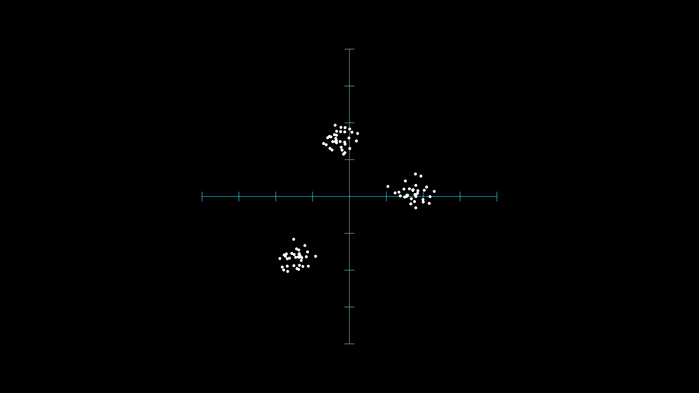
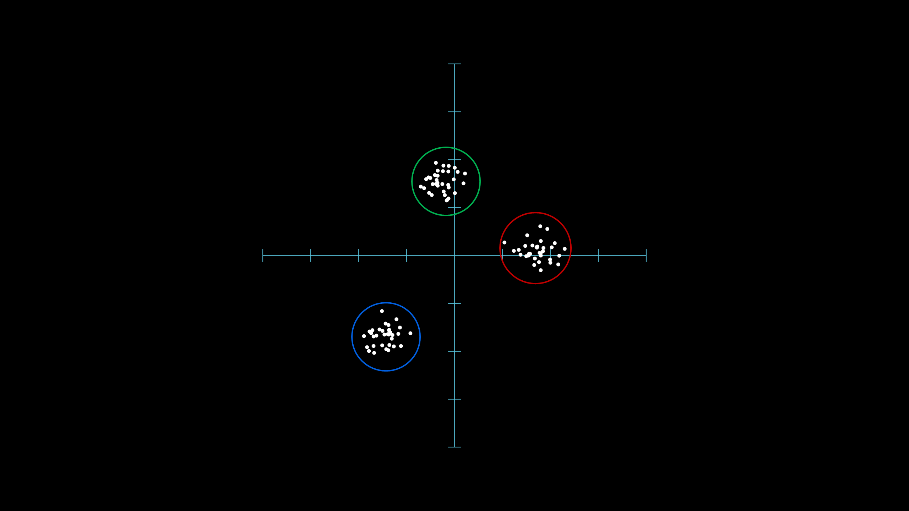
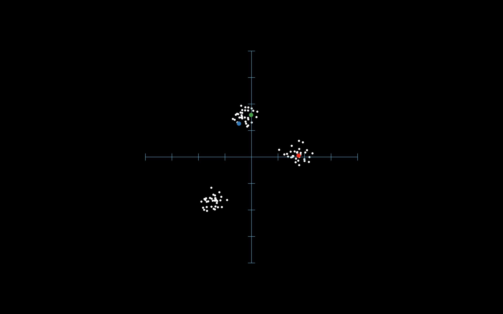
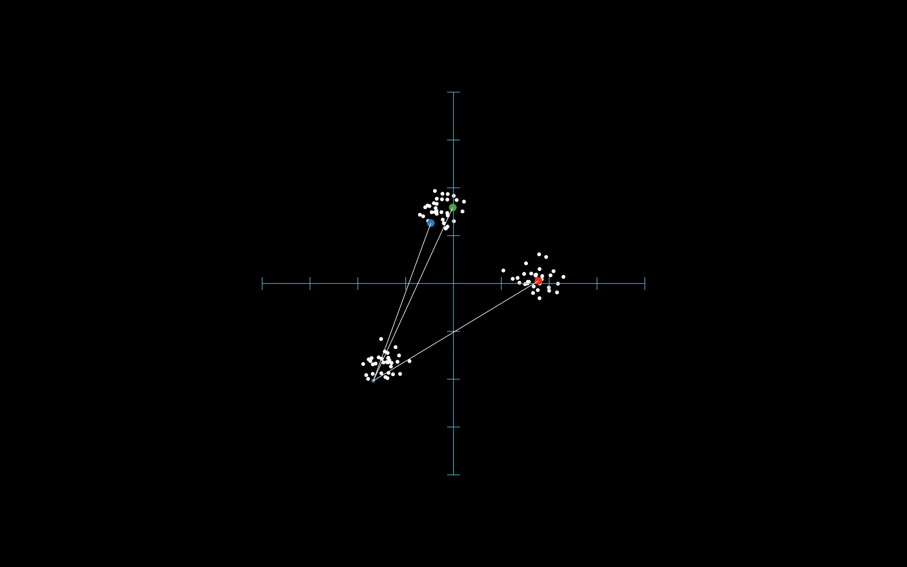
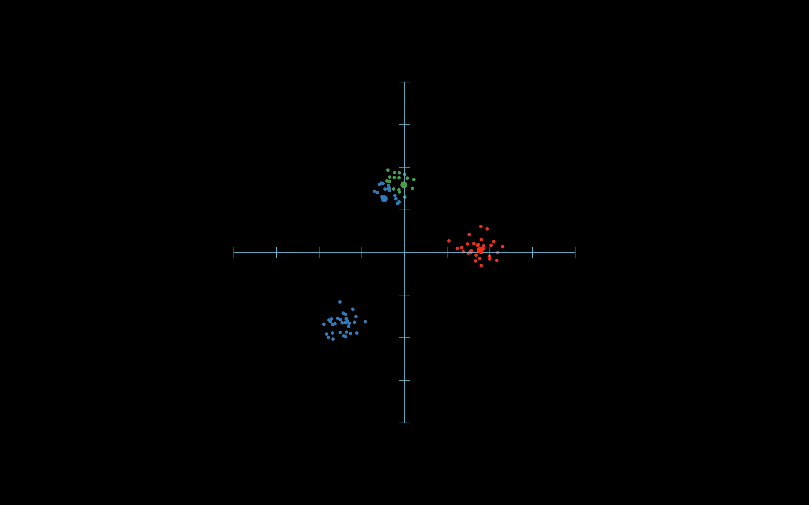

K-means#
Визуализация k-means#
Всем привет! Сегодня рассмотрим решение задачи кластеризации на примере использования метода k-means (он же метод k-средних). Пусть у нас имееются некоторые точки на плоскости. Знаю, знаю какие-то случайные точки - это довольно скучно. Но я всё же хочу начать с этого унылого примера, а в следующем эпизоде показать применение метода для реальной задачи.
{kind=link}
Когда ты смотришь на эти точки, что происходит в твоей голове? Лично мой мозг пытается найти какую-то структуру в этих данных. Выглядит она как-то так.
{kind=link}
То есть наш мозг пытается каким-то образом упорядочить и выделить что-то общее среди объектов, которые он видит. При этом всё происходит автоматически без прикладывания существенных усилий. Я буду понимать под кластером группу объектов, которая объединена какими-то общими свойствами. В данном случае, свойством является то, что часть точек имеет некоторое сгущение и находится вдали от других групп точек. В принципе, это и есть возможное решение задачи кластеризации, которое за бесплатно получено работой мозга. Однако, это не всегда так работает. В случае, если данных много и при этом они имеют сложную структуру так быстро найти среди них какие-то общие характеристики просто посмотрев на них, увы не выйдет. Поэтому попробуем найти решение этой задачи за счёт использования программирования.
Теперь давай попробуем воплотить решение в виде программы, которая определит кластеры, которым соответствуют точки. Предлагаю поступить следующим образом: давай выберем три случайные точки среди заданных и будем считать, что они соответствуют трем различным кластерам.
{kind=link}
Я буду отображать принадлежность точки определенному кластеру при помощи различных цветов. Получается, что в таком случае мы определили принадлежность трех точек различным кластерам. Осталось разобраться со всеми оставшимися точками, которые в данный момент времени не соотнесены какому-либо кластеру. Для того, чтобы определиться с ними поступим следующим образом. Будем брать поочередно каждую точку, которая не имеет лейба (то есть не соответствует какому-либо кластеру) и определим ближайшую точку из трех зафиксированных в начале. После этого в качестве лейбла выберем тот, который соответствует ближайшей точке из трех выбранных. Например, в данном случае, точка соответствует синему кластеру.
{kind=link}
Далее будем повторять этот процесс для всех точек. В результате мы получим такой вид кластеризации для наших данных.
{kind=link}
На самом деле мы можем улучшить наше решение.
Для этого поочередно рассмотрим точки каждого кластера и посчитаем для них новый центр.
Теперь вместо трех случайных точек, которые мы выбрали на первом шаге, будем рассматривать, полученные центры в процессе усреденения координат различных кластеров.
Собственно, поэтому метод и называется k-means, так как в определенный момент времени рассматривается усреднение по текущему кластеру, для получения нового центра.
Затем, нам необходимо повторить те же шаги, что мы проделали до этого.
Т.е. задать лейбл каждой точке в зависимости от того, какой центр находится ближе всего к ней.
Как ты можешь видеть, уже на второй итерации мы получаем неплохое решение исходной задачи.
{kind=link}
Это и есть описание возможной реализации метода k-means.
Теперь перейдем к непосредственному написанию программы.
Настройка окружения#
Сегодня я поступлю не совсем честно с тобой и буду предполагать, что тебе известно про пакеты в языке Python, а также известно про виртуальные окружения.
Давай создадим отдельную папку для нашего сегодняшнего эпизода.
Я назову её naive_kmeans.
Теперь я создам виртуальное окружение внутри этой папки, следующим образом:
python -m venv ./venv_utils
После этого нам необходимо активировать виртуальное окружение:
source venv_utils/bin/activate
В случае сисетмы windows необходимо выполнить следующую команду:
venv_utils\Scripts\activate.bat
Отлично. Виртуальное окружение активировано и мы можем перейти к процессу установки необходимых библиотек. Для этого выполним следующую команду:
pip install numpy pandas plotnine scikit-learn
Генерация данных#
Теперь непосредственно перейдем к нашей задаче.
Сегодня я буду без погружения в детали демонстрировать код, который я использовал для решения задачи.
Рекомендую тебе проследовать по ссылке в описании к этому ролику и повторить со мной все шаги, которые приведены в текстовой версии данного эпизода.
В случае, если у тебя возникнут какие-либо затруднения я всегда готов ответить на возникшие вопросы в комментариях к этому эпизоду.
Я создам файл с названием k_means.py.
Для начала подключим все необходимые нам библиотеки.
import numpy as np
import plotnine as gg
import pandas as pd
from sklearn.datasets import make_blobs
После этого сгенерируем наши точки, которые мы хотим закластеризовать:
X, y = make_blobs(n_samples=100, centers=3, n_features=2, random_state=42)
X = (X - X.mean(axis=0)) / X.std(axis=0)
X = pd.DataFrame(X, columns=("x1", "x2"))
Наши данные, представляют собой таблицу с координатами точек:
print(X.head())
x1 x2
0 -1.257301 -1.524866
1 1.499872 -0.113177
2 -0.264088 1.248653
3 1.623146 -0.139594
4 -1.005307 -1.204185
Теперь давай просто нарисуем то, как выглядят наши исходные данные. Для отрисовки данных я буду использовать пакет plotnine:
ggplt = (
gg.ggplot(data=X, mapping=gg.aes(x="x1", y="x2")) +
gg.geom_point() +
gg.coord_fixed() +
gg.theme_minimal()
)
ggplt
# В обычном .py файле необходимо использовать следующее выражение:
# ggplt.draw(show=True)
<ggplot: (8784763672171)>
Запустим нашу программу и убедимся, что всё корректно работает:
python k_means.py
Давай заведем новый столбец в нашей таблице, в котором мы будем хранить лейбл кластера, которому принадлежит точка. Для начала просто присвоим всем точкам нулевой кластер. Далее мы будем переопределять лейбл кластера для каждой точки, как мы видели в начале ролика.
X["cluster"] = "0"
print(X.head())
x1 x2 cluster
0 -1.257301 -1.524866 0
1 1.499872 -0.113177 0
2 -0.264088 1.248653 0
3 1.623146 -0.139594 0
4 -1.005307 -1.204185 0
Реализация функционала#
Нам остается только воплатить в жизнь ту визуализацию, что мы видели в начале. Итак, нам нужно выбрать три случайные точки среди всех. Заведем функцию, которая возвращает k-случайных индексов, где k - число кластеров. В качестве аргументов, пусть она принимает число точек и число кластеров:
def get_rand_indxs(n, k):
return(np.random.randint(0, n, size=k))
Вычислим текущие положения центров:
np.random.seed(42) # Зафиксируем генератор случайных чисел, для воспроизводимости результатов
rindxs = get_rand_indxs(X.shape[0], 3)
centers = X.iloc[rindxs, 0:2]
Теперь воспользуемся этими индексами и присвоим трем точкам из наших данных лейблы кластеров.
Я буду использовать строки "1", "2", "3".
X.iloc[rindxs, 2] = ["1", "2", "3"]
Нарисуем наши текущие данные:
ggplt = (
gg.ggplot(data=X, mapping=gg.aes(x="x1", y="x2", color="cluster")) +
gg.geom_point() +
gg.coord_fixed() +
gg.theme_minimal() +
gg.scale_color_manual(values=["gray", "#c20305", "#377eb8", "#4daf4a"])
)
ggplt
# В обычном .py файле необходимо использовать следующее выражение:
# ggplt.draw(show=True)
<ggplot: (8784763527042)>
Заведем функцию, которая будет для каждой точки находить ближайший к ней центр кластера.
Назовем функцию get_cluster, которая принимает в качестве аргументов координаты точек и текущие центры.
Внутри функции я пользуюсь свойством numpy array-ев, которое называется трансляцией.
Данное свойство позволяет обойтись без использования лишних циклов и вычислить расстояние от каждой точки до заданных центров.
Я укажу ссылку в текстовой версии данного эпизода.
Это позволит тебе в деталях разобраться с тем, как устроена данная функция.
В результате работы функции мы определяем индекс до ближайшего центра и в соответствии с этим определяем лейблы точкам.
def get_clusters(X, centers):
A = X.iloc[:, 0:2].to_numpy()
B = centers.iloc[:, 0:2].to_numpy()
distances = np.sqrt(((A - B[:, np.newaxis]) ** 2).sum(axis=2))
return([["1", "2", "3"][i] for i in distances.argmin(axis=0)])
Воспользуемся функцией и обновим метки кластеров в нашем dataframe-е.
clusters = get_clusters(X.iloc[:, 0:2], centers)
X.cluster = clusters
Нарисуем обновленный вариант картинки с нашими данными:
ggplt = (
gg.ggplot(data=X, mapping=gg.aes(x="x1", y="x2", color="cluster")) +
gg.geom_point() +
gg.coord_fixed() +
gg.theme_minimal() +
gg.scale_color_manual(values=["#c20305", "#377eb8", "#4daf4a"])
)
ggplt
# В обычном .py файле необходимо использовать следующее выражение:
# ggplt.draw(show=True)
<ggplot: (8784755068598)>
Далее, нам необходимо определить среднее положение коордиант каждого кластера. Для этого заведем дополнительную функцию, которая на вход принимает наш dataframe и для каждого кластера вычисляет его центр:
def get_centers(X):
return X.groupby("cluster").mean().reset_index(drop=True)
centers = get_centers(X)
После этого мы можем отобразить, вычисленные средние центры для нашей текущей кластеризации:
centers_for_plot = pd.concat((centers, pd.DataFrame({"cluster": ["1", "2", "3"]})), axis=1)
ggplt = (
gg.ggplot(data=X, mapping=gg.aes(x="x1", y="x2", color="cluster")) +
gg.geom_point() +
gg.coord_fixed() +
gg.theme_minimal() +
gg.geom_point(data=centers_for_plot, mapping=gg.aes(x="x1", y="x2"), size=5) +
gg.scale_color_manual(values=["#c20305", "#377eb8", "#4daf4a"])
)
ggplt
# В обычном .py файле необходимо использовать следующее выражение:
# ggplt.draw(show=True)
<ggplot: (8784763566576)>
Финал#
Нам осталось лишь повторять вышеприведенные шаги до тех пор, пока лейблы кластеров не совпадут для двух последовательных итераций.
Оформим это в виде бесконечного цикла while:
while True:
old_clusters = X.cluster
X.cluster = get_clusters(X.iloc[:, 0:2], centers)
if np.array_equal(X.cluster, old_clusters):
break
centers = get_centers(X)
В результате, мы получаем следующий результат:
ggplt = (
gg.ggplot(data=X, mapping=gg.aes(x="x1", y="x2", color="cluster")) +
gg.geom_point() +
gg.coord_fixed() +
gg.theme_minimal() +
gg.scale_color_manual(values=["#c20305", "#377eb8", "#4daf4a"])
)
ggplt
# В обычном .py файле необходимо использовать следующее выражение:
# ggplt.draw(show=True)
<ggplot: (8784755005954)>
Я знаю, что какие-то куски кода могут быть не супер очевидными, но я всегда готов помочь разобраться в деталях. Однако, одним из хороших способов изучить программирование является процесс анализа чужого кода. В любом случае, просто дай мне знать, если тебе нужны какие-то подсказки относительно сегодняшнего эпизода, в комментариях, либо в телеграм-чате. На этом на сегодня всё. В следующий раз мы рассмотрим пример использования кластеризации для реальных данных, а не синтетичексих. Я думаю, что набор случайных точек не сильно интригует, но попробуем рассмотреть что-нибудь повеселее в следующий раз. До скорой встречи, друг.